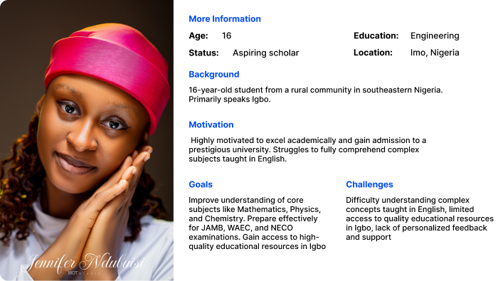
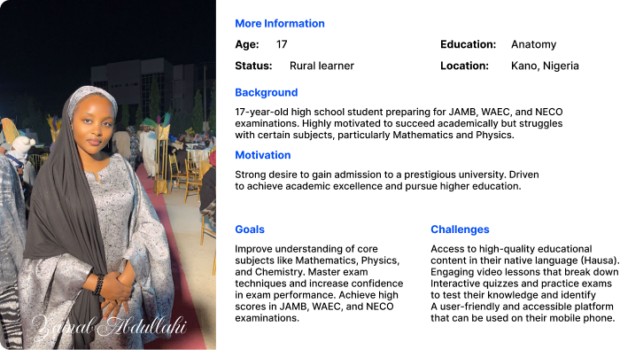
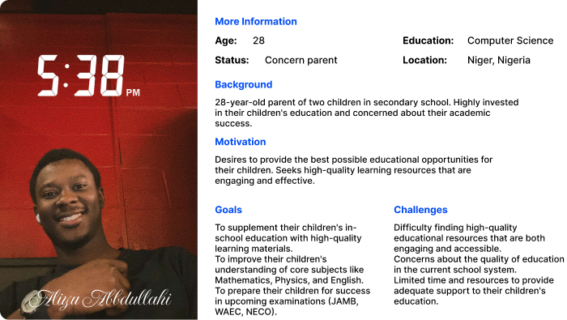
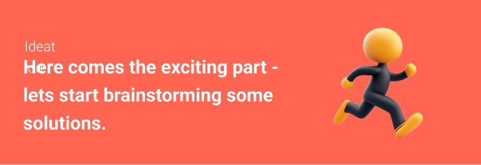

In this article, I will guide you through my design process for Made Easy Academia,
an online learning platform designed to empower Nigerian students with access to
high-quality education. This case study will explore the challenges, design
decisions, and iterative development process that led to the creation of a
user-centered and engaging learning platform.
Abdullateef Muhammad
Product Designer
About Project
Project background
In the following lines, I will share with you the story behind why I chose to take on this project. I will be using a storytelling approach from my point of view to explain the background. I have chosen this approach as I believe in the power of stories and think there is no better way to convey the background of a project than through a well-told story.
The afternoon sun streamed through the window of Abba's room, illuminating the faces of five friends engrossed in a heated debate. We were mathematics students, fresh from a grueling tutorial, our minds still buzzing with complex equations and confusing theorems. "Maths is so hard to understand in class," lamented Maina, frustration evident in his voice. "It's like the lecturer speaks a different language.
We all nodded in agreement. "I think it's easier when someone explains it in a way that makes sense," chipped in Hydar, "Like how Yusuf explained that last concept to us yesterday."
This sparked a lively discussion. Was it the lecturer's teaching style? The pace of the class? Or something else entirely? Gradually, the conversation shifted towards the language barrier. Many of our classmates, particularly those from rural areas, struggled with English, the primary language of instruction. This, we realized, was a significant hurdle in their academic journey.
An idea began to take shape. "Why don't we do something about it?" I suggested, a spark of excitement igniting within me. "We could create something that makes learning easier for everyone.
The idea resonated with my friends. We spent the next few hours brainstorming, discussing potential solutions, and debating the merits of different approaches. As I pondered the possibilities, the name "Made Easy Academia" came to mind. "Academia" seemed fitting, reflecting the academic nature of our endeavor. Abba, ever the pragmatist, suggested dropping the "s" for a more concise and impactful name.
And so, the seed of Made Easy Academia was sown. I envisioned a platform that would not only provide high-quality educational content but also bridge the language gap by offering materials in multiple Nigerian languages. This would ensure that students from diverse backgrounds had equal access to quality education.
To make Made Easy Academia truly unique, I wanted to incorporate two key elements:
A Cultural Corner: This section would showcase the richness and diversity of Nigerian culture, teaching students about their heritage and promoting inter-cultural understanding. It would also feature vocabulary lessons in different Nigerian languages, further enriching their linguistic abilities.
The Secondary Section: Recognizing the importance of early preparation, this section would cater to secondary school students, providing them with a solid foundation for their university studies. We would offer engaging video lectures, practice quizzes, and past questions from JAMB, WAEC, and NECO to help them excel in their examinations.
I knew this was an ambitious undertaking, but I was determined to make a difference. With the support of my friends and a shared passion for education, I believed that Made Easy Academia could become a beacon of hope, empowering students across Nigeria and paving the way for a brighter future.
Challenge
As a group of university students, we observed a significant gap in the Nigerian education system: the limited accessibility of quality education for students from diverse linguistic backgrounds. Recognizing that many students struggle to grasp complex subjects like Mathematics when taught solely in English, we identified a pressing need for an innovative educational solution.
Furthermore, as aspiring entrepreneurs, we faced our own set of challenges:
Securing high-quality educational content: Finding qualified educators proficient in multiple Nigerian languages (Hausa, Yoruba, Igbo) to create engaging and effective learning materials proved to be a significant hurdle.
Overcoming the limitations of online learning: We needed to address the challenges of delivering an engaging and effective learning experience remotely, particularly in a field like education that often benefits from in-person interaction.
Building a user-friendly and accessible platform: Creating a platform that was not only visually appealing and easy to navigate but also accessible to students with varying levels of technological literacy was crucial for widespread adoption.
Funding and resource constraints: As students, we faced limitations in terms of funding, equipment, and access to professional resources.
These challenges spurred us to innovate and develop Made Easy Academia, a platform that would not only bridge the language gap in education but also provide a high-quality and accessible learning experience for all Nigerian students.
Deliverables
As the lead UX/UI Designer and Developer for Made Easy Academia, my key deliverables included:
Design Process
Research
The genesis of Made Easy Academia stemmed from a shared frustration among my fellow students and myself regarding the challenges of accessing quality education in Nigeria. We observed that many students, particularly those from diverse linguistic backgrounds, struggled to grasp complex subjects when taught solely in English. This observation, coupled with the limited availability of engaging and accessible educational resources in their native languages (Hausa, Yoruba, Igbo), fueled our desire to create a meaningful solution.
To inform our approach, I conducted thorough market research. This involved:
Competitve Analysis
Analyzing existing online learning platforms, particularly those offering educational content in Nigerian languages, identifying their strengths and weaknesses, and identifying areas for improvement.
User Research
I conducted interviews with students from various backgrounds, including those from rural areas and those whose primary language was not English. These interviews explored their learning preferences, challenges, and expectations for an online learning platform.
This research phase provided invaluable insights into the key challenges facing Nigerian students and informed the core design principles of Made Easy Academia. These insights guided the development of a platform that prioritized accessibility, inclusivity, and a user-centered approach, ensuring that the platform effectively met the unique learning needs of our target audience.
Define
During the Define stage, I collected and analyzed all the data obtained from the secondary research. Based on this data, I created two user personas that represented the target users and their needs. Additionally, I created user journey maps for each persona that helped me understand the gaps in the current user process and identified areas for improvement. My focus was on understanding the wants and needs of users.
User personas and Journey maps

Wants:
Access to high-quality educational content in Igbo.
Engaging video lessons that break down complex concepts in a clear and concise manner.
Interactive quizzes and practice exams with detailed explanations for incorrect answers.
Personalized learning paths tailored to individual learning styles and academic goals.
Access to experienced educators and tutors for personalized feedback and support.
A user-friendly platform with a clean and intuitive interface.
Affordable learning options that fit within a student's budget.
A supportive and inclusive learning community where students can connect and learn from each other.


Ideation

With the insights gathered from user research, I began jotting down all the ideas that popped up in my mind. At this point, I had numerous ideas, so it was time to filter out the ones that aligned with the users’ wants and needs, as well as addressed their pain points.
To come up with design solutions for the user wants that I identified during the research stage, I transformed them into “How Might We” (HMW) statements. This allowed me to unlock potential design solutions that addressed those wants and needs.
By framing the challenges as HMW questions, I was able to explore a wider range of potential solutions and brainstorm innovative approaches to address the unique needs and expectations of each user persona.
Information Architecture
The core principle guiding the Information Architecture (IA) of Made Easy Academia was to prioritize user-friendliness, accessibility, and ease of navigation. The goal was to create a clear and intuitive structure that allowed students to easily find the information they needed and seamlessly navigate through the platform.
Wireframes
The wireframe process allowed me to see how everything fits together. We also used it to help with user flow. We played out scenarios of how the user would use the product and move between screens.
I began with listing out the main content and elements of each page and grouping them by related items. I then sketched the pages with a pen and paper, but some of them I created digitally. The wireframes allowed us to gather feedback and iterate.